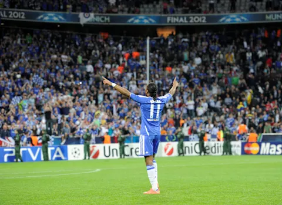
MY FAVORITE / 11DIDIER
DIDIER
DROGBA
ดิดิเยร์ ดร็อกบา
นักเตะสามคนและโค้ชสองคนที่ผมชื่นชอบ บนโลกฟุตบอลของผม
นักเตะสามคนที่ผมชอบ
และสองโค้ชที่ผมชื่นชอบ

ดิดิเยร์ ดร็อกบา
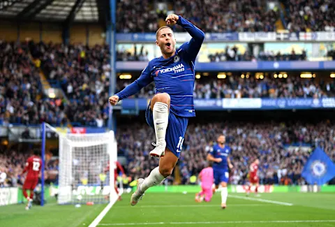
เอเด็น อาซาร์
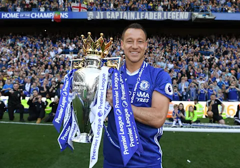
จอห์น เทอร์รี
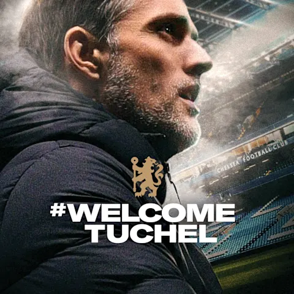
โธมัส ทูเคิล
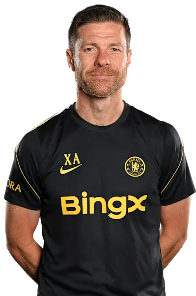
ชาบี อลอนโซ
ทีมชุดใหญ่ 30 คน · ไม่รวมรายชื่อยืมตัว
ตรวจจากหน้าโปรไฟล์สโมสร
ดูรายชื่อทางการ ↗
แสดง 30 คน
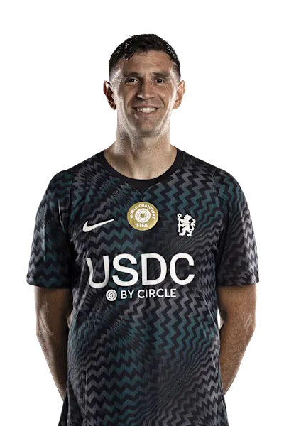
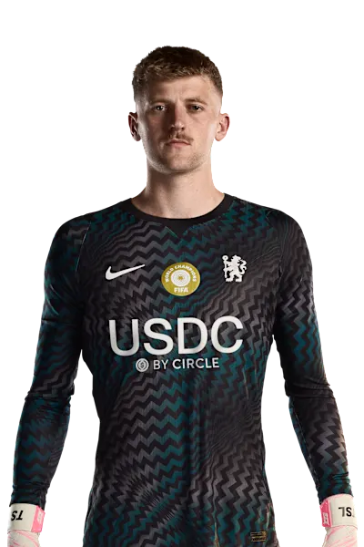
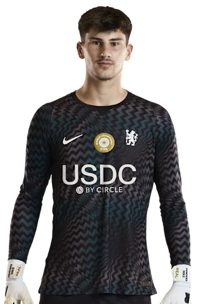
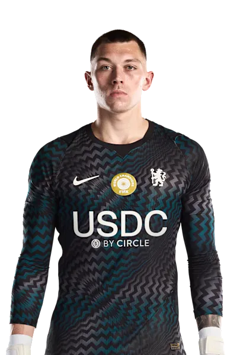
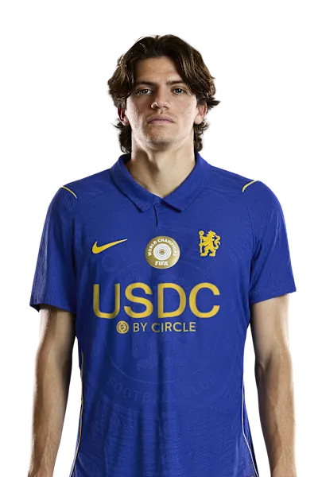
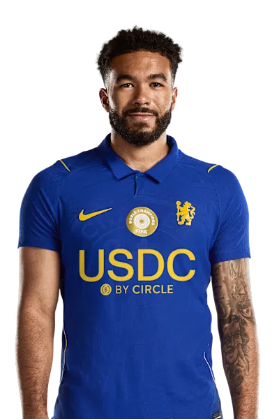
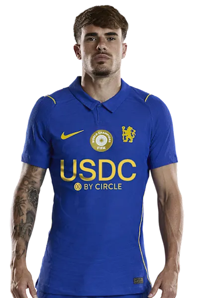
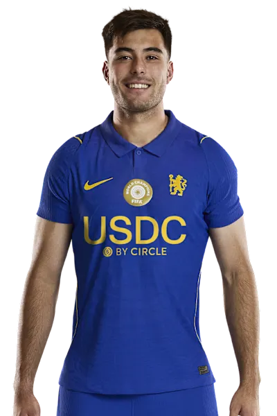
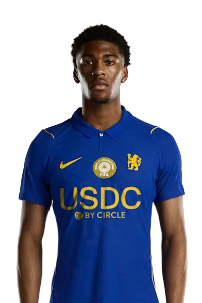
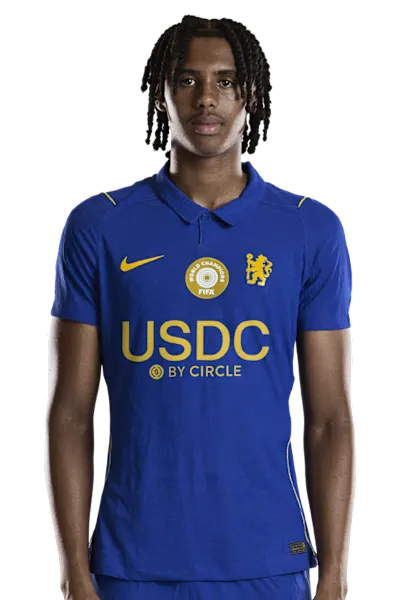
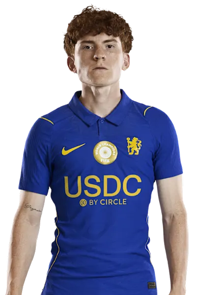
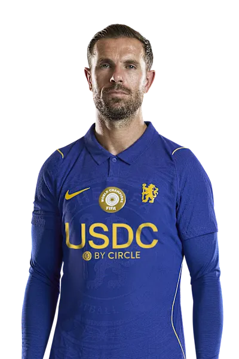
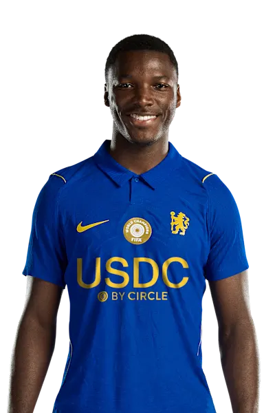
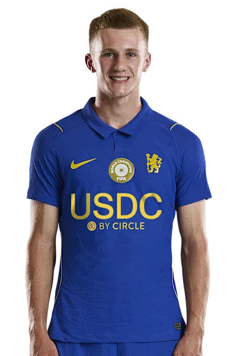
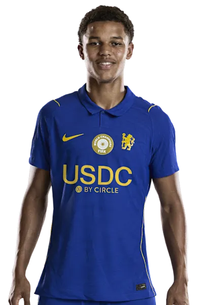
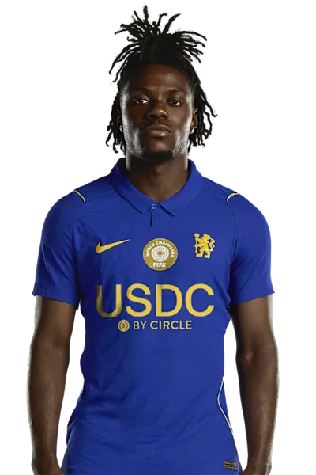
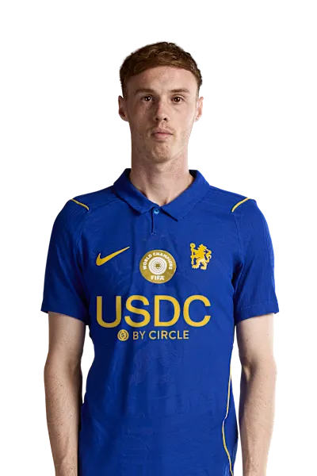
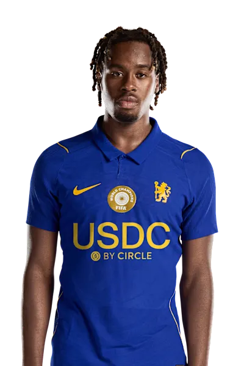
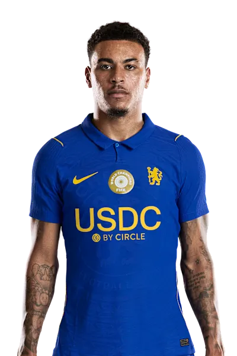
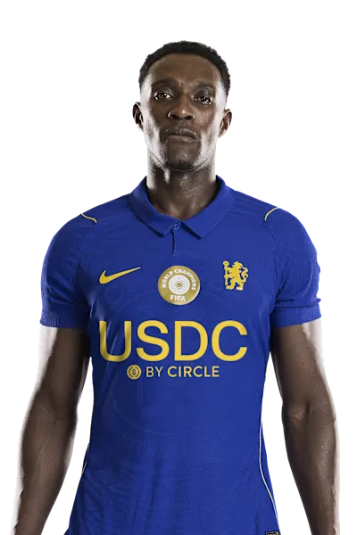
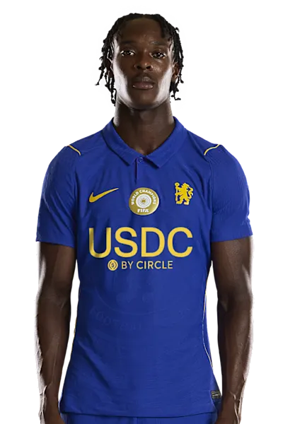
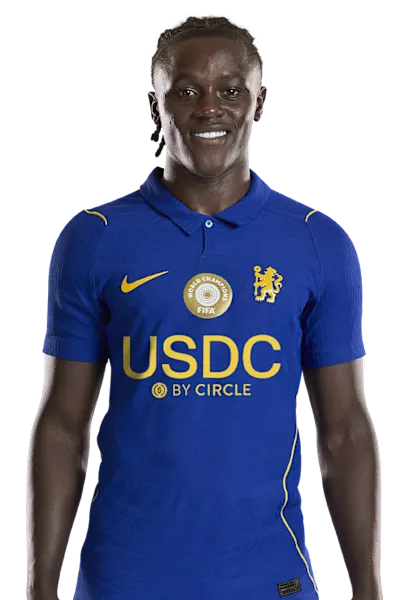
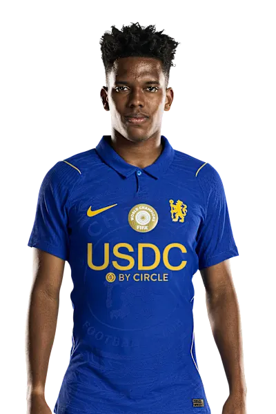
ภาพและข้อมูลประกอบ: Chelsea FC · รายชื่อเป็นข้อมูล ณ วันที่ตรวจ ไม่ได้อัปเดตอัตโนมัติ เว็บไซต์ส่วนตัวของแฟนบอล ไม่ใช่เว็บไซต์ทางการของสโมสร